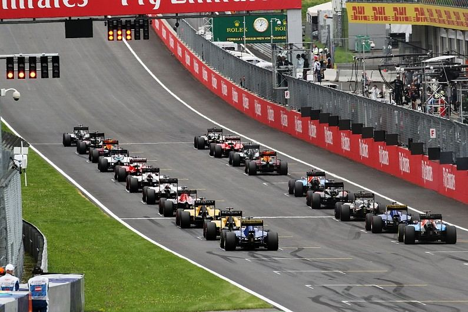
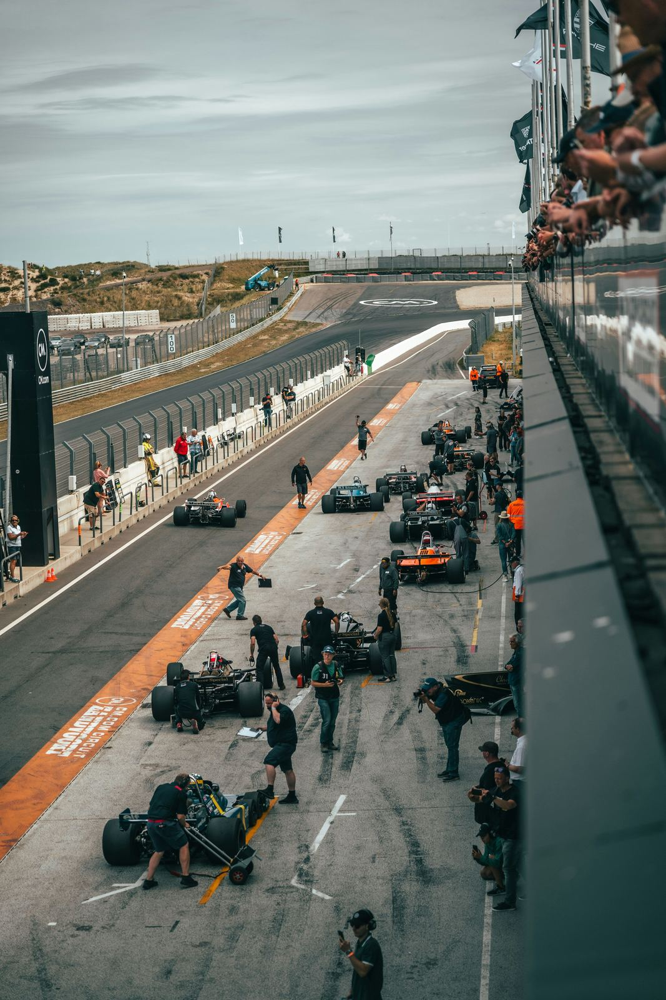

¿Cuántas vueltas tiene una carrera de Fórmula 1?
La distancia de cada Gran Premio se calcula para que el ganador complete la menor cantidad de vueltas que supere los 305 kilómetros, salvo excepciones como el Gran Premio de Mónaco.
Reunimos las dudas más comunes entre quienes empiezan a seguir la Fórmula 1: cuánto dura una carrera, cómo se arma la parrilla de salida, cómo se reparten los puntos y por qué los pilotos paran en boxes.
La distancia de cada Gran Premio se calcula para que el ganador complete la menor cantidad de vueltas que supere los 305 kilómetros, salvo excepciones como el Gran Premio de Mónaco.
Es el orden en el que los pilotos comienzan la carrera, definido por los resultados de la clasificación del sábado.

Los diez primeros clasificados de cada carrera suman puntos que se acumulan durante toda la temporada para definir al campeón de pilotos y al de constructores.
En carreras sin lluvia, el reglamento obliga a usar al menos dos compuestos de neumáticos distintos, así que cada piloto debe entrar a boxes como mínimo una vez. Por eso los equipos planifican su estrategia de paradas en pits.
